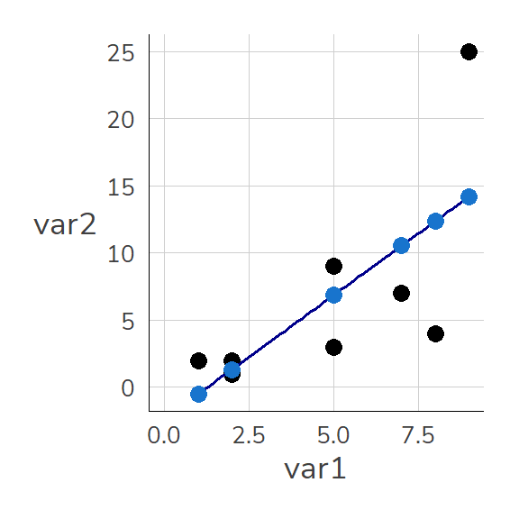

Let’s consider a (fictional) dataset with only five cases. We can create a dataset using the data.frame command. Our dataset initially has just two variables: var1 and var2:
Here is the translation of the provided text into English:
6.1 Regression Models with lm()
Regression models in R can be created with lm(). Here, we specify the variable for the y-axis (the dependent variable) and, after a ~, the variable for the x-axis (the independent variable). We will discuss the interpretation of the results in the coming weeks.
The value under var1 indicates how much the line changes up/down per “step to the right”. Thus, the line increases by 1.8389662 for each unit of var1. We can store the results under m1:
m1 <-lm(var2 ~ var1, data = dat1)
With summary(), we get a regression table:
summary(m1)
Call:
lm(formula = var2 ~ var1, data = dat1)
Residuals:
Min 1Q Median 3Q Max
-8.372 -3.613 0.162 2.234 10.789
Coefficients:
Estimate Std. Error t value Pr(>|t|)
(Intercept) -2.3400 4.3454 -0.538 0.6096
var1 1.8390 0.7727 2.380 0.0548 .
---
Signif. codes: 0 '***' 0.001 '**' 0.01 '*' 0.05 '.' 0.1 ' ' 1
Residual standard error: 6.127 on 6 degrees of freedom
Multiple R-squared: 0.4856, Adjusted R-squared: 0.3999
F-statistic: 5.664 on 1 and 6 DF, p-value: 0.05477
m1 contains all the information about the model, and $coefficients is particularly helpful:
m1$coefficients
(Intercept) var1
-2.339960 1.838966
summary(m1)$coefficients
Estimate Std. Error t value Pr(>|t|)
(Intercept) -2.339960 4.3453801 -0.5384938 0.60961706
var1 1.838966 0.7727028 2.3799139 0.05477457
We can view the individual values with View(m1):
For example, fitted.values contains the predicted values for each case.
If we want to recalculate the model, we have two options:
6.2.1 Create a New Data Frame
We can keep multiple data.frame objects in memory in R. Thus, we can easily create a new data.frame containing only observations with var2 < 20 and use this for our lm() command:
Call:
lm(formula = var2 ~ var1, data = dat1_u20)
Residuals:
1 2 3 4 5 6 7
-0.4737 0.1941 -1.4737 4.5230 1.1875 -2.4803 -1.4770
Coefficients:
Estimate Std. Error t value Pr(>|t|)
(Intercept) 1.1382 1.9217 0.592 0.579
var1 0.6678 0.3877 1.722 0.146
Residual standard error: 2.555 on 5 degrees of freedom
Multiple R-squared: 0.3724, Adjusted R-squared: 0.2469
F-statistic: 2.967 on 1 and 5 DF, p-value: 0.1456
6.2.2 Filter Directly in lm()
We can also incorporate the filter() command directly into the data= argument of lm():
m2b <-lm(var2 ~ var1, data = dat1 %>%filter(var2 <20))summary(m2b)
Call:
lm(formula = var2 ~ var1, data = dat1 %>% filter(var2 < 20))
Residuals:
1 2 3 4 5 6 7
-0.4737 0.1941 -1.4737 4.5230 1.1875 -2.4803 -1.4770
Coefficients:
Estimate Std. Error t value Pr(>|t|)
(Intercept) 1.1382 1.9217 0.592 0.579
var1 0.6678 0.3877 1.722 0.146
Residual standard error: 2.555 on 5 degrees of freedom
Multiple R-squared: 0.3724, Adjusted R-squared: 0.2469
F-statistic: 2.967 on 1 and 5 DF, p-value: 0.1456
6.3 Regression tables
If we want to compare these different models, a table is a good option.
There are numerous alternatives for creating regression tables, and my personal favorite is modelsummary() from the eponymous package {modelsummary}. It handles (almost) all types of models and offers a wide range of features, including Word output (more on this later) and coefficient plots (which we will also cover). Additionally, the documentation is excellent.
We will delve a bit more into the customization options for {modelsummary} later, but here are two key options for now:
By using stars = T, we can display the significance levels with the common star codes (*: p < .05, etc.)
By using gof_omit = "IC|RM|Log", we can hide the goodness of fit statistics that have IC, RM, or Log in their names (such as AIC, BIC, RMSE, and LogLikelihood)
By using "Name" = in list(), we can specify names:
Of course, we can also include categorical independent variables in our model. However, we need to define the relevant variables as factors to inform R that the numeric values should not be interpreted numerically.
For instance, in our small example, educ represents education levels where 1 stands for basic education, 2 for intermediate, and 3 for high education.
To include multiple independent variables in our regression models, we specify them using +:
m4 <-lm(var2 ~ ed_fct + var1, dat1)summary(m4)
Call:
lm(formula = var2 ~ ed_fct + var1, data = dat1)
Residuals:
1 2 3 4 5 6 7
4.258 2.758 -4.824 -2.082 -2.758 -4.258 6.907
Coefficients:
Estimate Std. Error t value Pr(>|t|)
(Intercept) 2.3187 5.8227 0.398 0.717
ed_fctbasic -4.8297 6.0381 -0.800 0.482
ed_fcthigh -8.0824 5.9411 -1.360 0.267
var1 1.7527 0.8347 2.100 0.127
Residual standard error: 6.501 on 3 degrees of freedom
(1 Beobachtung als fehlend gelöscht)
Multiple R-squared: 0.7002, Adjusted R-squared: 0.4003
F-statistic: 2.335 on 3 and 3 DF, p-value: 0.2521
6.6 Coefficient Plots
In addition to regression tables, {modelsummary} provides the modelplot() function, which makes it easy to create coefficient plots from one or more models:
modelplot(m4)
For model comparison, simply provide the models in a named list, and you can further customize the plot with the usual {ggplot2} commands:
modelplot(list("Model 1"= m1,"Model 4"= m4))
With coef_map, you can assign labels to the coefficients (note that (Intercept) does not get a name and is therefore omitted):
Create an object mod1 with a linear regression model (lm) where netges (monthly net income in EUR) is the dependent variable and azges1 (working hours) is the independent variable! (see here)
Examine the results of mod1 - what can you infer about the relationship between netges and azges1?
6.7.2 Categorical Independent Variables
Create a regression model with the income of respondents (netges) as the dependent variable and the education level of the respondents schul as the independent variable:
value
label
2
Finished school without degree
3
School incorporating physically or mentally disabled children (Sonderschulabschluss)
4
Lower secondary school (Hauptschulabschluss)
5
Intermediate secondary school (Realschulabschluss, Mittlere Reife)
General/subject-specific upper secondary school (Hochschulreife)
Ensure that schul2 is defined as a factor. Assign the labels “No degree”, “Special education School”, “Secondary School”, “Intermediate Diploma”, “Vocational School”, “Abitur” to levels 2-7 and save the factor as a variable schul2_fct in your data.frame - see the code help below:
We can also specify geom_ for just a subset by reassigning data = (not using the selection from the main ggplot() command) and applying a filter(). Additionally, we shift the label slightly above the point with var2 + 3.
dat1 <- dat1 %>%select(-matches("compl"))
6.8.2 Predicted Values
The predicted values from lm() can be found under $fitted.values:
For the first row of dat1, the predicted value from m1 is: 2.1351 + 0.5811 * 1 =2.7162
The values under fitted.values follow the order in the dataset, so we can simply add them as a new column in dat1:
dat1$lm_predictions <- m1$fitted.valuesdat1
id var1 var2 educ gend x ed_fct lm_predictions
1 1 2 2 3 2 2 high 1.337972
2 2 1 2 1 1 1 basic -0.500994
3 3 2 1 2 1 2 medium 1.337972
4 4 5 9 2 2 4 medium 6.854871
5 5 7 7 1 1 1 basic 10.532803
6 6 8 4 3 2 NA high 12.371769
7 7 9 25 2 1 NA medium 14.210736
8 8 5 3 -1 2 NA <NA> 6.854871
The plot shows how predictions based on m1 look: They correspond to the values on the blue line (the so-called regression line) at the respective points for var1.
Code
ggplot(dat1, aes(x = var1, y = var2)) +geom_point(size =3) +geom_smooth(method ="lm", color ="darkblue", se =FALSE, size = .65) +geom_point(aes(x = var1, y = lm_predictions), color ="dodgerblue3", size =3) +expand_limits(x =c(0,8), y =c(0,8))

6.8.3 Residuals
The light blue points (i.e., the predictions from m1) are close to the actual points. However, even the light blue points do not perfectly overlap with the actual values. These deviations between the predicted and actual values are called residuals: \[Residual = observed\, value \; - \; predicted\, value\]\[\varepsilon_{\text{i}} = \text{y}_{i} - \hat{y}_{i}\] We can calculate these manually as the difference between the actual and predicted value or simply call them using m1$residuals:
You can check the normality assumption with the Shapiro-Wilk test & shapiro.test(). This tests the null hypothesis \(H_0\): “The residuals are normally distributed” against the alternative hypothesis \(H_A\): “The residuals significantly deviate from normal distribution.”
shapiro.test(m1$residuals)
Shapiro-Wilk normality test
data: m1$residuals
W = 0.95346, p-value = 0.746
6.8.6 Test for Homoscedasticity
Homoscedasticity is present when the predicted values are approximately equally distant from the actual values (m1\$fitted.values) across the entire range of values. There is both a graphical method for checking this and a formal test. For the graphical check, the predicted values and the residuals are plotted as a scatterplot. The autoplot() function can be helpful here:
autoplot(m1, which =1)
The associated test is the Breusch-Pagan test. This test evaluates the null hypothesis (\(H_0\)) of “homoscedasticity” against the alternative hypothesis (\(H_A\)) of “heteroscedasticity.” The p-value indicates the probability with which we must reject the homoscedasticity assumption. In R, you can use bptest from the lmtest package for this:
install.packages("lmtest")
library(lmtest)bptest(m3)
studentized Breusch-Pagan test
data: m3
BP = 3.6069, df = 2, p-value = 0.1647
A common threshold for the Variance Inflation Factor (VIF) is 10. Values of VIF above 10 indicate a serious multicollinearity problem, and often measures are recommended starting from a stricter threshold of about 5.00. In this specific example, all independent variables are within acceptable limits according to both thresholds.
If multicollinearity is present, there are several ways to address it: We can exclude one or more independent variables from the model. This is ultimately a substantive question and cannot be resolved with a standard recipe. Alternatively, we can combine the collinear independent variables into index variables. For example, we could create a common index, such as the average of the respective independent variables.
6.8.8 Comparing Regression Models
With the {performance} package, we can also perform a comprehensive model comparison:
When comparing models, please note that probably not all models were fit
from same data.
# Comparison of Model Performance Indices
Name | Model | R2 | R2 (adj.)
--------------------------------
m1 | lm | 0.486 | 0.400
m4 | lm | 0.700 | 0.400
6.8.9 Individual Coefficient Plots with {broom}
modelplot() offers a quick way to create coefficient plots, but I often use {broom}. Using broom::tidy(..., conf.int = TRUE), we get a data.frame with the results of the regression model, which we can then process further in {ggplot2}—if the standard solution from modelplot() doesn’t meet our needs or preferences:
library(broom) ## already loaded as part of the tidyversetidy(m3, conf.int =TRUE)